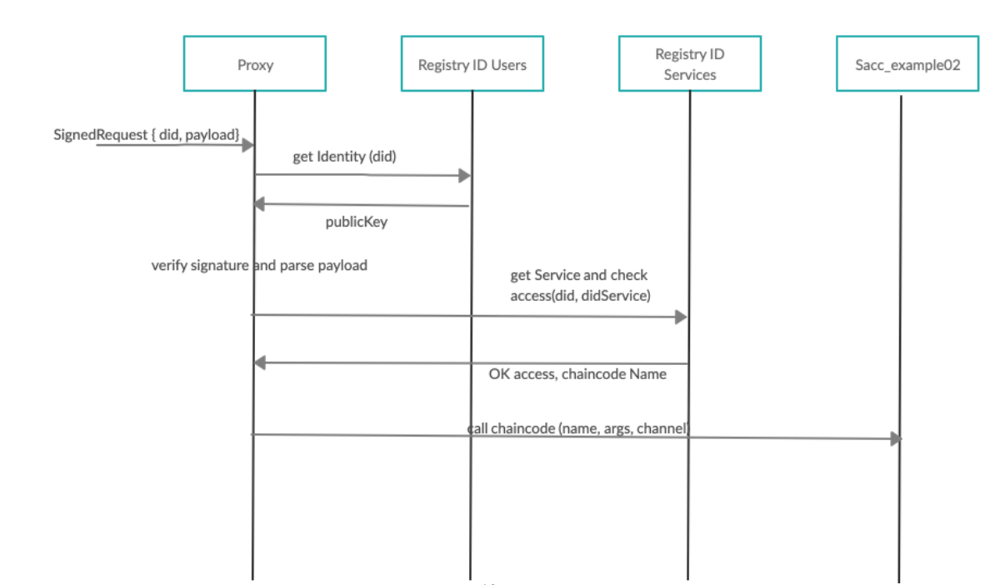

TrustID¶
TrustID is a standalone identity module for TrustOS. We followed a decentralized identity approach for its design, where users (and services) are identified through a DID.
These DIDs follow the W3C standard, and they serve as a unique ID to identify users. DIDs aggregate all the pieces of public information required to authenticate a user (i.e., their public key or X.509 certificate).
This is the structure of a DID Identity
id:<string>Unique identifier of the identity using the W3C standardpubkey:<String>Public key of the identityprivkey:<string>Private key of the identitytype:<string>Algorithm used in order to generate the keyscontroller:<String>Verifier of the identity. In future, an identity should have more than one controller
Example:
{
"id": "did:vtn:trustid:d830c50977703f421a0ed5a8707ecfe50559fe73dd2bf90c261b76a1379acbea",
"type": "RSA",
"controller": "",
"access": 0,
"privkey": "U2FsdGVkX1+t4HgMMEsla3Kw050Td00gS0Crs5Q/D95LQ0Q8KAM3D8CIDQSbWf2fVlZZqvn2Rw5rr8nVkQRPVCAXQcLf3ufw53qLyB2pOqZh3hWWJ8T0jwc1esn6ONkDR4oyKXMWU1dJjilfmkpcv9u87YqTJAUxkfXRgAN+X5d/rO4Q0yOTMDyJpQe7DsCusRYAU42Xf2ZTV+v2ZnPHMm/aN18Zmk3xRh7/KH1Sz8LjJNpDgatYcETupYfIrdKES21mNAbSikn7UXzXB3gPrHIP9JucQqckgStpwgwf1qnI2P7xEXB6pZKBb9v5riCzxCygbWajDyDApGt9K3Jx8ULNNHeZ4BZ4FVgZ6NI4gYSrurdF4GXe0c+DZlnexJwpYAIQmq5r49ZrxC7mVK0gs4o2lXOt0P5adwDh1zbDUPMEJ6jrRV2b7/nthyUEJy10JlK0BCpwms+AnJ8JY5nn25z8JD4+p5i6zpq4IOuZaOf1qsja3fuGstH/0tPlGHvu556gqN8vIVGMt9QwzUIE+kH+GxmyHEi/TV8MRQmyGeCFtsZT9EoS5io1bP7mMC3+KvwvAXuqZXnvHBh5k7RreykIX6VpuJdUwibv5ram7DxV9wXLyVc8zbFWAWwoaFE9XVYxykTFFiD5Soui7Ddrf5dR5UPZ0Gs5SW79A6BxLlnGSgIOt4yuDIprHSRL0QglBvUVf1spUM4w1s8tcRWZmYy6rEeH3kIDLcUoAKDfhqUcQKkNkPrq9mLNMnHB178KJbpwjyFUly7tqZER67hfnYoc0CHPpryD2PhSjrMsJ23bc3xLm2bjRtqeBB3NB7lJhaZ6mshsFy3TIBdnBmb8cafENTDUEYLGFKaVf9gn+tqMMU5dAj2VT46UHMnrwqD0jRE8yKLzcUNxR1bWI+oB5cbtijbkf8O1W4js6yZgkEHd9QVcoS3pGladPPNKxKavPyNEJOSOAZ6KBLhsLgrNyYHMdcaJdMwcDc9/0uMlJ+4PW21GxdmV9uw8NdocpxWjusfHjsmPl5bno0nq9HcmOvKKdU5cwQKJS/eaQc8GS104tDHjurxriS7KXHBLDGllzDl3QOskMw7RDb5jOLUbq2Zl0p0nznitKnLrHTc7/xMfAY8d8OXD5yhzps/JQUEQDWy0OoheJ8CPmmsF22HmNce+/ylRfI1bv2/cHYN8oz+7wGO/LCFW9cPv0s5Dlwvix6NsHfXHzLu0Vo9lbsn+LcPgA5+JMOBDnJ+ba2ps4QGRc/i5gCF8NrFaa+tc2EXRLpAD33r1sxicCVm7CSK4jVWTg6MCkGbqGaaQTEx+x9RUp5og8Ap0IZ2OxjUVe9BaMpHwdyfcfjzG1J0sR485wMQS4FZvf2s10fhqV6GJxnr8dxgZMfZD8gBpJRveumqMAHD2PCs3LY+eIQzIio2wG7hy6fuZ6rZFZn5TOAxPT4t8IOEHluzUUukHzh0uBxBTLahQJAREFMKXzekU7WJlHxyBl5ISRBn2lrfjjskAclCW5JiusqJKWx7DDHaZLIYdxvszTi9MCLHJyCc6B/wfxw5sTC6rCoAt8n+pcdIiAXfuzyMtkthsdELXtrXJ84BeSc0YAob0/duPfHVikNDdQOcFNWWKH1f/6Y5R0Qcf1QaDIkfdjX77smM2duO6jkV3g1xrGpwUyFiHM+YHYp0UsPOa/YzVEpWRJu/tIivCmxiSZwTom1QNo7Y7PtkReIeW3RvA8vlhEGMYGrg6jzZOA4aXjYpYxM5O8zWTANRhQbs4DtBOSXGrw7YtKmTdC9B1waiKs3SG6npmNquO3IyMWEHfrDjEsYoca4XoEdT1/egKjPQi4rgqvjLYmcTkWYD27XaP2NM8L+pcBeeTN2f3MCCfhM4niuDF1l09GG9G703Z3GHmWJP8dHWCs+CVJgn06/OET9Eo25i5XdUwOEGgB2fqJSLxt5Gflm6TPeehqGM6q4ivFad9CQ8mUDcCWtw+DYvRTxXAy1TiBGgs9UbMy7lFMayUHfWNh5clhhOHxxTmHdsIO3gw7OkTwVQ2bLBliKLJdTr46D4gUka1vmfo7vTUU3c05OtPV2zwWkoButbRR+8koEKNoSfw0gBMjgu3u17tLASg2JGBJ1WLp1SOn571FsgKOWyepZDObrDFO8P+nCCc4LPocOpjds4fWXMvOaS4XU0BHrKF5YWvxpLIA2zMHVd3I/szcPvRgsM73WByrmZLAKAetOgv4li2OwjitLZsrOKZ5+58EiMcqr8LgiiMyVSC3c8luuL14BT1cFN0BaUKLVtzOuIv48bQhFeE",
"pubkey": "-----BEGIN PUBLIC KEY-----\r\nMIIBIjANBgkqhkiG9w0BAQEFAAOCAQ8AMIIBCgKCAQEAxfun1NH3jOlNRuX0z7cr\r\n5eFWCt/xUSKwikYg7NRoaNn/NNAQln/BDSamVG3RwlmM/dvUt783Hp7YqeHscXmp\r\ngKwWiF/RycT3Sx9l3qC0MfLlbmsQJ0ZqO+Iuy+vjAxq4RGTS1dzuCjipPy4yBCxB\r\nrWT/q3lFboWaEAoFA+DFm0Hwt47P+lApAfcMc0JduW31gaULUNpqTZyQJBwBKfk1\r\nBZPrurutwnEuOxOOOFNXXL/IUSqneC+71drGO4xA1Sq1bKtsJE9WYW3U8w4C8dHs\r\nU1rq9z/MOAsUlz+DGzyIMI16ypjTC8T4BkWg9vGPgf/C8ropgsbx+9fMKBSisHG5\r\ntQIDAQAB\r\n-----END PUBLIC KEY-----\r\n"
}
This is the structure that is stored in the DLT platform that belongs to an user or device identity:
Did:<string>Unique identifier of the identity using the W3C standardPubKey:<String>Public key of the identityController:<String>Verifier of the identity. In future, an identity should have more than one controllerAccess:<integer>Policy of the identity in order of identity operations, 0 root, 1 admin, 2 user.
Example
{
"Did ": "did:vtn:trustid:d830c50977703f421a0ed5a8707ecfe50559fe73dd2bf90c261b76a1379acbea",
"Controller": "",
"Access": 0,
"PubKey": "-----BEGIN PUBLIC KEY-----\r\nMIIBIjANBgkqhkiG9w0BAQEFAAOCAQ8AMIIBCgKCAQEAxfun1NH3jOlNRuX0z7cr\r\n5eFWCt/xUSKwikYg7NRoaNn/NNAQln/BDSamVG3RwlmM/dvUt783Hp7YqeHscXmp\r\ngKwWiF/RycT3Sx9l3qC0MfLlbmsQJ0ZqO+Iuy+vjAxq4RGTS1dzuCjipPy4yBCxB\r\nrWT/q3lFboWaEAoFA+DFm0Hwt47P+lApAfcMc0JduW31gaULUNpqTZyQJBwBKfk1\r\nBZPrurutwnEuOxOOOFNXXL/IUSqneC+71drGO4xA1Sq1bKtsJE9WYW3U8w4C8dHs\r\nU1rq9z/MOAsUlz+DGzyIMI16ypjTC8T4BkWg9vGPgf/C8ropgsbx+9fMKBSisHG5\r\ntQIDAQAB\r\n-----END PUBLIC KEY-----\r\n"
}
This is the structure of a service identity
serviceID:<string>Unique identifier for the serviceName:<string>Chaincode or smart contract identifier at the DLT levelController:<string>Owner/admin of the serviceAccess:<string>Access policy to the service.Channel:<string>Network ID of the service
Example:
{
"serviceID": "track",
"name": "trackscc",
"access": {
"policy": "PUBLIC"
},
"channel": "telefonicachannel"
}
In order to uniquely identify chaincodes and services deployed in TrustOS, we decided to also give them DIDs so that they could be seamlessly discovered and accessed even if they “live” in independent channels not shared by all the organizations of the network.
All the authentication and management of identities in the system is performed on-chain through an “Identity Chaincode.”
If user A wants to start interacting with the network, he requests the generation of a new DID. The related keys to this DID could be an existing X.509 issued by a valid organization, or even an Ethereum-related public key (internally we use all the JWS, JWE, JWK, secp256k1, etc. RFCs to make our Fabric infrastructure compatible with identities of any nature for the sake of interoperability). This DID generation request has to be validated by a valid organization of the network. Once verified, every transaction signed by user A and directed through a Proxy chaincode is authenticated successfully and delegated to the corresponding chaincode.

The TrustID project is conformed by the aforementioned chaincode and a client SDK to ease the integration and interaction with TrustID-enabled networks.
TrustID is designed to ease the management of identities for the case of TrustOS. Users shouldn’t need to hold a different set of credentials for each network or decentralized application they interact with. The same credentials used to access your owned Bitcoins and manage your tokens in Ethereum should let you update the state of a Fabric asset or launch a secondary market in TrustOS.
ID API¶
An abstraction TrustID API implementation. It wraps the functionality of the TrustID SDK in order to offer basic identity management services to users comfortable delegating the responsability of their keys to a custodian. ID API acts as the third-party custodian of the users keys.
API Specification¶
The implementation considers that the API is the third-party custodial of TrustID keys. Currently the keystore is implemented with a FileKeystore, MongoKeystore comming soon. Private keys from users are stored ciphered with a passphrase. In order to call every function and unlock the account the passphrase needs to be provided. The API has the following routes.
Identity Methods¶
POST - /id/login¶
It return a JWT to interact with services authenticated using JWT using TrustID as identity backend. This functionality is offered for every user in the system (even those for which we are not the custodials of the keys). Some services may be still authenticated with JWT, and we want to support this authentication even of TrustID users.
id:<string>Unique identifier of the userpassword:<string>Password of the user
Sample structure (Click to expand)
{
"id": "did:vtn:trustid:ae0213fncasdf234",
"password": "pass",
}
POST - /id/refresh¶
It refreshes a JWT login.
POST - /id/create¶
Create a new identity with the key determined in type and a passphrase to lock the private key.
id:<string>Unique identifier of the usertype:<string>Algorithm used, right now only RSA is supportedchannel:<string>Identificator of the HF network
Sample structure (Click to expand)
{
"password": "passphrase",
"type": "RSA",
"channel" "channel1"
}
POST - /id/get¶
Gets the information from a registered identity.
id:<string>Unique identifier to query the identity.
Sample structure (Click to expand)
``` { "id": "did:vtn:service:012343", "password": "passphrase" } ```POST - /id/revoke¶
Sends a request to revoke a specific identity. You need to be the owner of the identity or its controller to perform this task.
id:<string>Identity that is going to be revoked.
Sample structure (Click to expand)
{
"id": "did:vtn:test",
"password": "passphrase"
}
POST - /id/verify¶
Verification of a registered identity by a controller in the system.
id:<string>Identity that is going to be verified for the user that had been logged.
Sample structure (Click to expand)
``` { "id": "did:vtn:test", "password": "passphrase" } ```Signature methods¶
POST - /id/sign¶
Requests a signature using a key in custody.
Body
payload:<json>Payload that needs to be signed
Sample structure (Click to expand)
``` { "payload": { "arg1": "test", "arg2": "payload" } } ```POST - /id/validate¶
Validates a signature using a key in custody.
id:<string>Identifier of the signerpayload:<string>Payload that needs to be validated
Sample structure (Click to expand)
{
"id"
"payload": "eyaqwuqiiqiwiqaqiemasoiaiqiiaskqweioqweiuwe"
}
Services methods¶
POST - /service/create¶
Create a new service in the TrustID network.
serviceID:<string>Identity that is going to be verified for the user that had been logged.name:<string>Name of the service deployed in Hyperledger Fabricaccess:<json>Access policy that will have the service: PUBLIC, SAME_CONTROLLER, FINE_GRAINEDchannel:<string>Identificator of the HF network.
Sample structure (Click to expand)
``` { "serviceID": "track", "name": "trackscc", "access": { "policy": "PUBLIC" }, "channel": "channel1" } ```POST - /service/update¶
Updates the information of a service.
serviceID:<string>Identity that is going to identify the service.name:<string>Name of the service deployed in Hyperledger Fabricaccess:<json>Access policy that will have the service: PUBLIC, SAME_CONTROLLER, FINE_GRAINEDchannel:<string>Identificator of the HF network.
The supported policies are the following:
PUBLIC, everyone with access on the network can call the service
SAME_CONTROLLER, identities with the controller that created the service, can call the service
FINE_GRAINED, only specific identities can access to the service
Sample structure (Click to expand)
``` { "serviceID": "did:vtn:service:sacc", "access": { "policy": "FINE_GRAINED", "threshold": 0, "access": { "did:vtn:trustid:c0fd6b4749329c4acec7f4ac273d46c2b755736e9f5cae6fc62acec8d04549c6": 2 } } } ```POST - /service/get¶
Gets the registered information for a service.
serviceID:<string>Identity that is going to identify the service
Sample structure (Click to expand)
``` { "serivceID": "did:vtn:service:012343", "password": "passphrase" } ```POST - /service/invoke¶
Invoke a function from a distributed service using TrustID.
serviceID:<string>Identity that is going to identify the service.function:<string>Function that is going to be called.args:<string>Args of the function that is going to be called.
Sample structure (Click to expand)
{
"serviceID": "did:vtn:trustos:123drfw",
"password": "passphrase",
"args": [
"a",
"b",
"200"
],
"channel": "channel1",
"function": "create"
}
POST - /service/invoke/jsonArgs¶
Invoke a function from a distributed service using TrustID.
serviceID:<string>Identity that is going to identify the service.function:<string>Function that is going to be called.args:<json>Args of the function that is going to be called in a json format.
Sample structure (Click to expand)
``` { "serviceID": "did:vtn:trustos:123drfw", "args": { "field": "value" }, "function": "create" } ```POST - /service/query¶
Invoke a function from a distributed service using TrustID.
serviceID:<string>Identity that is going to identify the service.function:<string>Function that is going to be called.args:<string>Args of the function that is going to be called.
Sample structure (Click to expand)
``` { "serviceID": "did:vtn:trustos:123drfw", "args": [ "a"], "function": "get" } ```POST - /service/query/jsonArgs¶
Invoke a function from a distributed service using TrustID.
serviceID:<string>Identity that is going to identify the service.function:<string>Function that is going to be called.args:<json>Args of the function that is going to be called in a json format.
Sample structure (Click to expand)
``` { "serviceID": "did:vtn:trustos:123drfw", "args": { "field": "value" }, "function": "get" } ```Signed Transactions¶
POST - /signed/id/import¶
Import an identity without custody in TrustID. Due to this, each transaction must be signed with the private key in custody by the user.
publicKey:<string>The publicKey to verify the signature of the transactionspayload:<string>A JWS signed with the private Key.
In order to create the JWS for the payload body, the JSON structure that is needed to be signed is the following:
{
"function":"createSelfIdentity",
"params":{
"did":"$id",
"publicKey":"$pubkey"
}
}
Sample structure (Click to expand)
``` { "publicKey": "-----BEGIN PUBLIC KEY-----\r\nMIIBIjANBgkqhkiG9w0BAQEFAAOCAQ8AMIIBCgKCAQEAokZtVnCJ5KnQRmYqV6j3\r\n1Oak7K0X/pBDe/QS+LG1UEwcvi2rzMutvJUouMnLgroTMjErYFq0gVJAq7io2Yo/\r\n1/I0suueWSfU30kNYoVikHgMKrHtWZA1iCR9uzYffeC/KYBi0f+bLB5789+zJvr3\r\n8ScaPu+S0LIoYN7j6b7CqWfTBIfqM8NNxyhPiWsGBykQOB1Gl3VEiivm9dp5vFuS\r\n0OM/pe/+ToA4vHDIpr1NyxV0zM4TzLHbvWV70HMztsXmYp1yW8EQcLd412FOmtkU\r\nkEqqsoNK1IYX6F1ooRUjSGeybxPNKobNwkAQqa4QPMW5eWBiIMvAxs2qVuPclkns\r\nrQIDAQAB\r\n-----END PUBLIC KEY-----\r\n", "payload": "eyJjdHkiOiJqd2sranNvbiIsImFsZyI6IlJTMjU2Iiwia2lkIjoidlB2MnhmLUUxcTEyVVhjUmtJMzZBcDU2blpzUktFSWpKYnJvWkRYTENGUSJ9.eyJmdW5jdGlvbiI6ImNyZWF0ZVNlbGZJZGVudGl0eSIsInBhcmFtcyI6eyJkaWQiOiJkaWQ6dnRuOnRydXN0aWQ6YjgwNmYzYmVmOTk2N2Y5MDNkYjk0NjdlYjgwOWViMTM4YzQ4ZDNkMTcxN2VkYTJkNWE2YmIxNzg5NjJhODgxZjIxNjA3NTI3NDgwMTMzIiwicHVibGljS2V5IjoiLS0tLS1CRUdJTiBQVUJMSUMgS0VZLS0tLS1cclxuTUlJQklqQU5CZ2txaGtpRzl3MEJBUUVGQUFPQ0FROEFNSUlCQ2dLQ0FRRUFva1p0Vm5DSjVLblFSbVlxVjZqM1xyXG4xT2FrN0swWC9wQkRlL1FTK0xHMVVFd2N2aTJyek11dHZKVW91TW5MZ" } ```POST - /signed/service/invoke¶
Write operation to a service signing the transaction with the private key guarded by the user.
publicKey:<string>The did to recover the public keypayload:<string>A JWS signed with the private key. The payload is the signature of the JSON explained below.
{
"function": "invoke",
params: {
did: "coren-trackscc", // did of the service
args: ["createAsset", JSON.stringify(**args**)], // function to call the chaincode and the respective params
channel: "channel1" // channel where is deployed the chaincode
}
}
Sample structure (Click to expand)
``` { { "id": "did:vtn:trustid:b806f3bef9967f903db9467eb809eb138c48d3d1717eda2d5a6bb178962a881f21606828938366", "payload": "eyJjdHkiOiJqd2sranNvbiIsImFsZyI6IlJTMjU2Iiwia2lkIjoidlB2MnhmLUUxcTEyVVhjUmtJMzZBcDU2blpzUktFSWpKYnJvWkRYTENGUSJ9.eyJmdW5jdGlvbiI6ImNyZWF0ZVNlbGZJZGVudGl0eSIsInBhcmFtcyI6eyJkaWQiOiJkaWQ6dnRuOnRydXN0aWQ6YjgwNmYzYmVmOTk2N2Y5MDNkYjk0NjdlYjgwOWViMTM4Yz" } ```POST - /signed/service/query¶
Read operation to a service signing the transaction with the private key guarded by the user.
publicKey:<string>The did to recover the public keypayload:<string>A JWS signed with the private key. The payload is the params explained below.
{
"function": "invoke",
params: {
did: "coren-trackscc", // did of the service
args: ["getAsset", JSON.stringify(**args**)], // function to call the chaincode and the respective params
channel: "channel1" // channel where is deployed the chaincode
}
}
Sample structure (Click to expand)
``` { { "id": "did:vtn:trustid:b806f3bef9967f903db9467eb809eb138c48d3d1717eda2d5a6bb178962a881f21606828938366", "payload": "eyJjdHkiOiJqd2sranNvbiIsImFsZyI6IlJTMjU2Iiwia2lkIjoidlB2MnhmLUUxcTEyVVhjUmtJMzZBcDU2blpzUktFSWpKYnJvWkRYTENGUSJ9.eyJmdW5jdGlvbiI6ImNyZWF0ZVNlbGZJZGVudGl0eSIsInBhcmFtcyI6eyJkaWQiOiJkaWQ6dnRuOnRydXN0aWQ6YjgwNmYzYmVmOTk2N2Y5MDNkYjk0NjdlYjgwOWViMTM4Yz" } ```If you want additional information about this API implementation and its functionality check the following repo.
TrustID SDK¶
This SDK exposes all the functionalities required to interact with TrustID-based DLT networks.
Install¶
To install this library you need access to the private repo:
npm install trustos-trustid-sdk
Structure¶
The library has the following modules:
Wallet¶
wallet.ts: Core module of the library. It wraps all the state and logic for identity management and interaction with TrustID networks. To start using the SDK a new wallet needs to be initialized. A wallet exposes the following methods:public setKeystore(keystore: Keystore): void:public generateDID(type: string, controller: string, passphrase): DID
Class DID¶
class DID: Has the following structure.public id: string: Id string that identifies the DID.public pubkey: string: PublicKey of the DID.public type: string: Key type (RSA / EC / OKP).public controller: string: Verifier of the identitypublic access: number: Access levelprivate privkey: string: Private Key of the DID.
And exposes the following functions:
public unlockAccount(passphrase: string): void: Unlocks private key in order to use the DID.public unlockAccount(passphrase: string): void: Unlocks private key with a temporal key in order to use the DID.public lockAccount(): any: Locks the private key for a DID.public sign(payload: object, passphrase: string): string: Sign a payload with a specific DID.public verify(signature: string, id: string): any: Verifies a signature from a DID.
TrustID operations¶
TrustID.ts: Interface that enables the inteoperation between the drivers and the different functionalities of TrustID. The only component implemented currently is thetrustIDhf.tsenabling the interaction with Hyperledger Fabric TrustID networks.setEndpoint(endpoint: string): void: Sets the network endpoint to interact with the TrustID network.createIdentity(did: DID): Promise<object>: Create an identity in TrustID. It generates a new DID in the wallet and register it in the network.verifyIdentity(adminDID: DID, id:string): Promise<object>: Verifies an identity as an admin.getIdentity(did: DID, id: string): * Promise<object>: Gets a registered identity from TrustID.revokeIdentity(adminDID: DID, id: string): Promise<object>: Revokes a registered identity. Only supported by the owner or controller of the DID.createService(did: DID, serviceDID: string, name: string, isPublic: boolean): Promise<object>: Creates a new service in the TrustID network.updateService(did: DID, serviceDID: string, access: Access, isPublic: boolean): Promise<object>: Updates the information from a service.getService(did: DID, serviceDID: string): Promise<object>: Gets information from a registered service.invoke (did: DID, serviceDID: string, args: string[], channel: string): Promise<object>: Invokes a function of a registered service in the TrustID network.query(did: DID, serviceDID: string, args: string[], channel: string): Promise<object>: Queries a function of a registered service in the TrustID network
Driver operations¶
driver.ts: Interface that enables the implementation of connection drivers with different TrustID networks. The only driver implemented currently is thehfdriver.tsenabling the interaction with Hyperledger Fabric TrustID networks.connect(config: object): Promise<object>;: Connects with a DLT networksdisconnect(config: object): void: Disconnects of a DLT networkcheckConnection(channelName?:string): Promise<object>: Check the connection with a DLTcallContractTransaction(id: string, fcn: string, args: any, channel?: string): Promise<object>: Write operation in the DLTgetContractTransaction(id: string, fcn: string, args: any, channel?: string): Promise<object>: Read operation in the DLT
Keystore¶
keystore.ts: Interface that enables the implementation of keystore storages. There are currently two implementations of keystore supported:FileKeystore.ts(to store DIDs in file keystore)andMongoKeystore.ts(to store DIDs in MongoDB).abstract getDID(id: string): DID: It gets specific DID from keystore.abstract storeDID(did: DID): boolean: It stores DID in keystore.abstract updateDID(did: DID): boolean: It updates DID in keystore.public storeInMemory(did: DID): boolean: Stores DID inMemory for easy and performant use.public listDID(): string[]: List DIDs in memory.public setDefault(did: DID): boolean: Set DID as default identity for the keystore wallet.
If you want additional information of TrustID, its SDK and its functionality check the following repo.
Example of use¶
// Use library
var id = require('trustos-trustid-sdk')
import { Keystore } from './keystore/keystore';
// Initialize wallet
wal = id.Wallet.Instance;
// Initialize new FileKeystore with storage at ./keystore
const ks = new sdk.FileKeystore("file", "./keystore");
wal.setKeystore(ks)
// ccp is the configu file of a Hyperledger Fabric network
const ccp = JSON.parse(fs.readFileSync("../ccp-dev-dsn.json", 'utf8'));
const config = { // additional config to connect with hyperledger fabric
stateStore: '/tmp/statestore',
caURL: 'https://ca:7054',
caName: 'ca',
caAdmin: 'admin',
caPassword: 'password',
tlsOptions: {
trustedRoots: "Certificate",
verify: false
},
mspId: 'telefonicaMSP',
walletID: 'admin',
asLocalhost: false,
ccp: ccp,
chaincodeName: "identitycc", //name of the trustid contract deployed on fabric
fcn: "proxy",
channel: "channel1"
}
// Create HF driver to interact with a hyperledger fabric network
var trustID = new sdk.TrustIdHf(config);
// Add and configure the network driver in our wallet.
wal.addNetwork("hf", trustID);
await wal.networks["hf"].configureDriver()
// IDENTITY OPERATION
// Generate key pair locally.
const did = await wal.generateDID("RSA", "test", "test")
await did.unlockAccount("test")
// Register in the platform.
await wal.networks.hf.createSelfIdentity(did)
wal.setDefault(did)
// Get the registered identity.
let res = await wal.networks.hf.getIdentity(did, did.id)
console.log("[*] Get registered identity\n", res)
//SERVICES OPERATIONS
await wal.networks.hf.createService(did, "coren-trackscc", "track", "PUBLIC", "channel1")
let res = await wal.networks.hf.getService(did, "coren-trackscc")
// Create an asset in the service: Track operation via trustid
const asset = {assetId: "test"+Date.now(), data:{"a":1, "b":2}, metadata: {"c": 4}}
const assetStr = JSON.stringify(asset)
// Invoke tract
res = await wal.networks.hf.invoke(did, "coren-trackscc",["createAsset", assetStr], "channel1")
console.log("[*] Asset creation:\n", res)
// Get the created asset.
res = await wal.networks.hf.invoke(did, "coren-trackscc",["getAsset", JSON.stringify({assetId: asset.assetId})], "channel1")
console.log("[*] Asset registered\n", res)
Roadmap¶
TrustID compatible with Hyperledger Indy, Verifiable Credentials, etc
Anonymous authentication with anonymous transactions
Integration with other Identity Providers, related with the non-blockchain world.
Support for other Keys algorithms, now only RSA is supported
Compatibility with Ethereum keys.